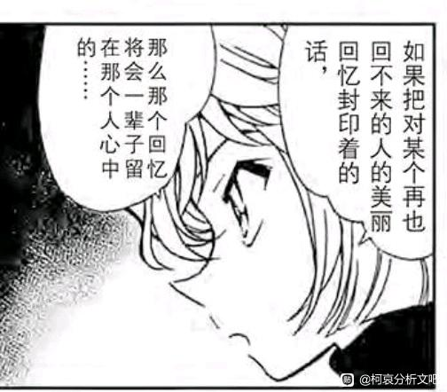
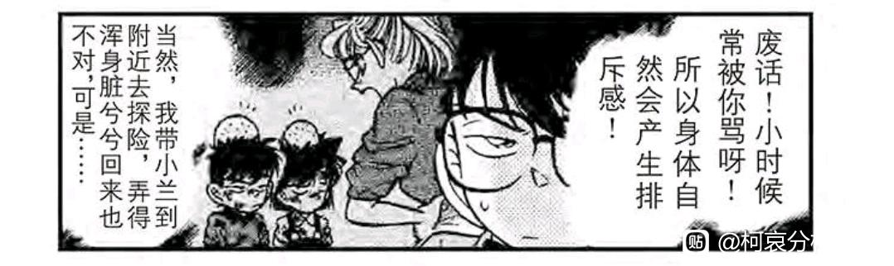
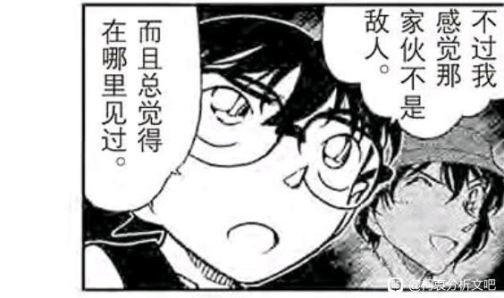
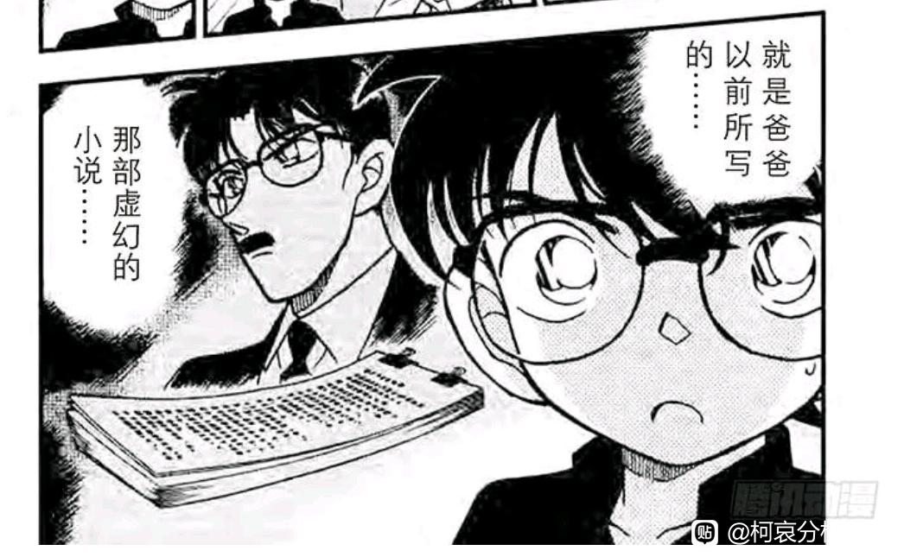
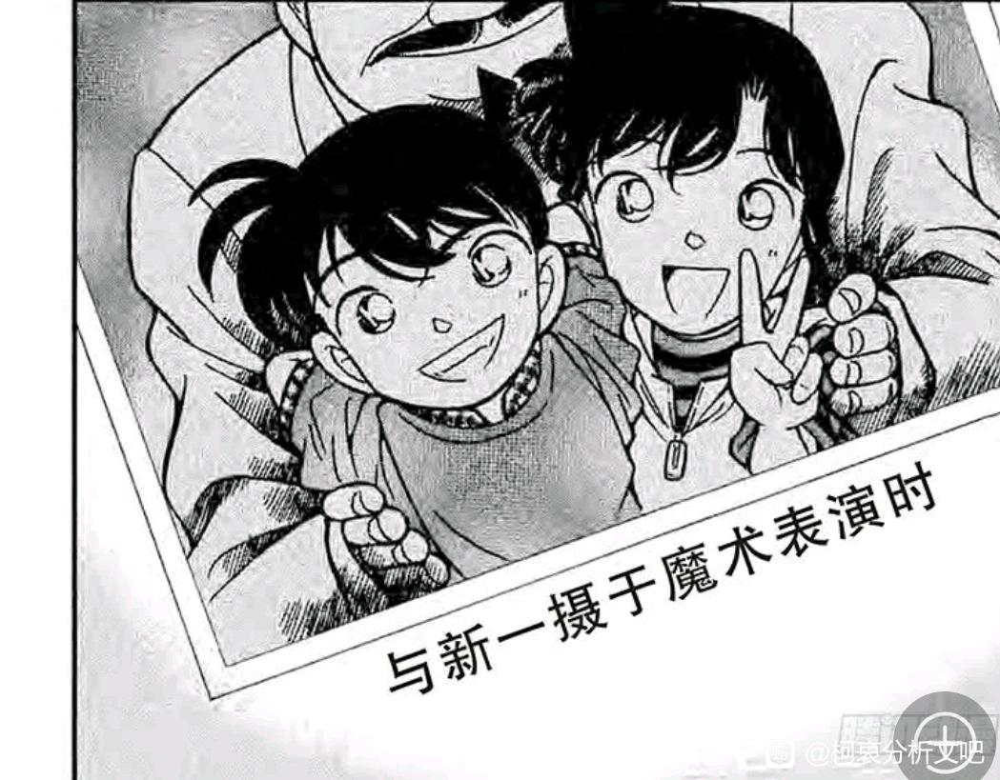
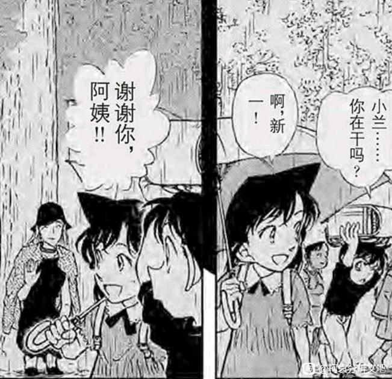
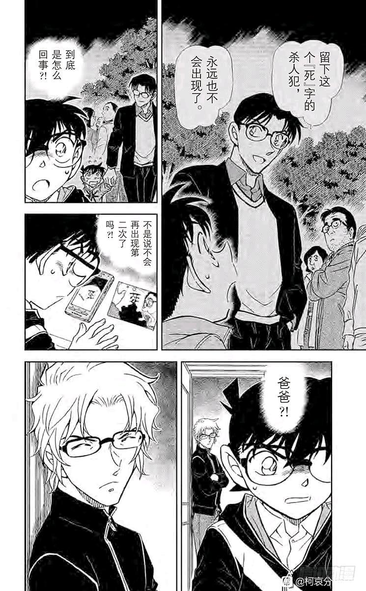
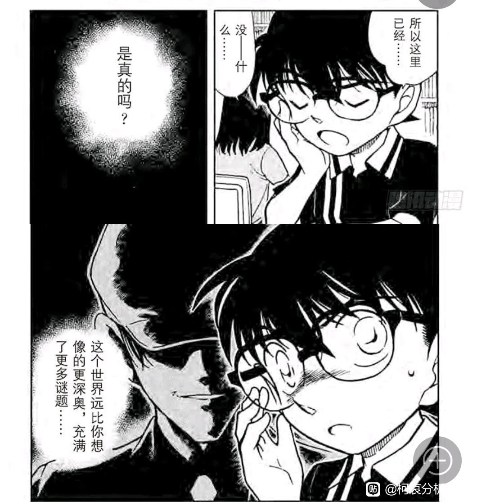
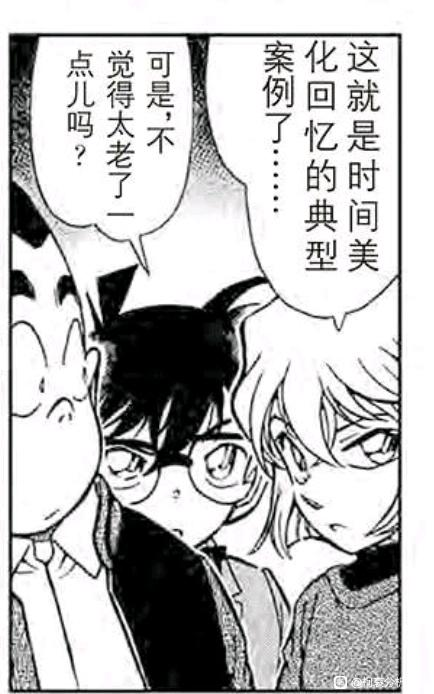

十年前是名柯中极为重要的一年，这一年小五郎从警视厅辞职，毛妃分居，这一年新一进入帝丹小学并遭遇了盗一；这一年赤井一家在海滩遇见了新一；这一年瑛佑住在杯户，并且瑛海出走也是在这一年，似乎除了正在美国的小哀（大概此时小哀和直美是同学）和大阪的平和（玩手铐中？），重要人物均已露面。
然而，柯南对十年前的回忆困难重重，几乎没有哪一次真的靠自己回忆十年前的某事，更多地表现为一种时断时续的回忆，这似乎只能指向一种结论：
【柯南正在淡忘十年前的事情】
既然十年前的记忆已经在淡忘的边缘，那么更久远的十三年前（乃至十四年前）的记忆就不能不怀疑其可靠性，樱花班首当其冲。
本帖将举出大量例子说明柯南对十年前记忆的模糊，供大家做发散思考。
然而，柯南对十年前的回忆困难重重，几乎没有哪一次真的靠自己回忆十年前的某事，更多地表现为一种时断时续的回忆，这似乎只能指向一种结论：
【柯南正在淡忘十年前的事情】
既然十年前的记忆已经在淡忘的边缘，那么更久远的十三年前（乃至十四年前）的记忆就不能不怀疑其可靠性，樱花班首当其冲。
本帖将举出大量例子说明柯南对十年前记忆的模糊，供大家做发散思考。

1、妃英理
柯南对妃英理的形象几乎完全忘记，只剩下“会挨骂”的本能反应，而柯南最后一次遇见英理是十年前。
需要注意，水族馆篇新一最后一次回忆妃英理的样子，英理的相貌仍然保持在十年前，之后可能新一连这个相貌都忘记了。
柯南对妃英理的形象几乎完全忘记，只剩下“会挨骂”的本能反应，而柯南最后一次遇见英理是十年前。
需要注意，水族馆篇新一最后一次回忆妃英理的样子，英理的相貌仍然保持在十年前，之后可能新一连这个相貌都忘记了。

2、世良
柯南同样未能认出世良，不但是世良，还包括后来非常熟悉的赤井秀一。
同样地，柯南保留了非常少的印象，最终在世良的海量提示下终于想起来涟漪篇。
柯南同样未能认出世良，不但是世良，还包括后来非常熟悉的赤井秀一。
同样地，柯南保留了非常少的印象，最终在世良的海量提示下终于想起来涟漪篇。

2024-07-09 21:33 | 史桩之玄枵:不过赤井和秀吉也没想起来你柯2024-07-09 23:58 | 黑暗刺猬-夏特:回复 史桩之玄枵 :秀吉知道啊，他记忆力可是超好的。而且，在FILE.860、861已经想起了。
3、优作的小说
柯南完全无法清晰回忆优作的小说，只记得大量断断续续的片段，这件事情出自富有深意的篇章【上野出发的北斗星】，最后是犯人完全按优作小说行动，柯南才回想起来。
柯南完全无法清晰回忆优作的小说，只记得大量断断续续的片段，这件事情出自富有深意的篇章【上野出发的北斗星】，最后是犯人完全按优作小说行动，柯南才回想起来。

cy
赶上直播了
4、新兰魔术表演
柯南完全不记得这回事了，以至于小兰找照片时柯南毫无反应。
柯南完全不记得这回事了，以至于小兰找照片时柯南毫无反应。

5、银杏色的初恋
柯南的十年前回忆问题很大，首先博士和芙纱绘约定的日期是11月24日，但漫画里柯南的回忆却是在夏季，所有人包括芙纱绘都是穿短袖，而柯南直接将此作为“芙纱绘就是博士要找的初恋的依据”，这显然是非常错误的，回忆里一定出现了什么问题，至少新一在夏天见过芙纱绘一面，地点则未知。
柯南的十年前回忆问题很大，首先博士和芙纱绘约定的日期是11月24日，但漫画里柯南的回忆却是在夏季，所有人包括芙纱绘都是穿短袖，而柯南直接将此作为“芙纱绘就是博士要找的初恋的依据”，这显然是非常错误的，回忆里一定出现了什么问题，至少新一在夏天见过芙纱绘一面，地点则未知。

2024-07-09 07:37 | 其它各种:银杏的季节，老贼一定心里有数的，浮纱绘这一章是精心设计的。别的都还能说，想画什么补丁打到哪里，这个记忆确实说不过去。2024-07-09 19:55 | 贴😢😄:唯一的解释是芙莎绘不是每隔十年只来一次，而是想起来就来一次，而且是自己来的，否则跟她上车和男子道歉说话的相悖。还有车上三人份的盒饭，明明芙莎绘和那个男人身材正常，难道后面要来个大胃王人设？总之芙莎绘的部分非常不严谨，如果不是伏笔，那青山的水平也太差了2024-07-09 20:14 | 上総守信長ºº:哇这个细节…太棒了2024-08-08 23:30 | 白石飛鳥:漫画后面芙莎绘还有再出场吗？
柯南不是挨了一棍子吗，所以忘了很多以前的事，个人猜测他小时候应该也被伤过一次，所以很多都想不起来
2024-07-09 07:53 | 贴吧用户_5XJeX2M:🌿太合理了
6、优作的未解决事件
柯南的回忆非常有限，完全无法回想起当时父亲之所以不再调查的原因。并且需要照片辅助回忆。
柯南的回忆非常有限，完全无法回想起当时父亲之所以不再调查的原因。并且需要照片辅助回忆。

7、少年冒险
柯南是偶然回忆到盗一的话，恰巧小林拿到了牛皮钱包柯南才想到要复盘一下（并发现了他十年都没发现的推理错误）
柯南是偶然回忆到盗一的话，恰巧小林拿到了牛皮钱包柯南才想到要复盘一下（并发现了他十年都没发现的推理错误）

2024-08-08 20:37 | snowfly1024:是牛皮钱包吗？我记得是蛇皮钱包啊2024-08-08 20:58 | 欧皇🍪:回复 snowfly1024 :确实是牛皮，蛇皮是三小只自己吓自己以为是蛇，我前几天刚看漫画这章2024-08-09 03:59 | snowfly1024:回复 欧皇🍪 :哦那我回去翻翻漫画，因为之前有人解读兰与蛇相关的元素，把这里作为一处论据的，所以我有点印象，也许我记错了——果然记忆是不可靠的，你说是吧小柯🤭
以上七件事都是柯南明确参与却不同程度忘记的事情，基本需要靠他人帮助才能回忆起来，全部发生于十年前。此外新一对于毛妃分居和小五郎辞职的事情完全不了解，不清楚是忘了还是本来就不知道。
相比之下，八年前新一饰演一休却能记住全部细节直到现在，七年前萩原研二的一面之缘柯南也记得住（当然这个出自M25，而我是怀疑M25进入正史的可能性的），因此，可以下这样一个结论：
【十年前是柯南记忆清晰程度的分界线】
十年内记得清清楚楚，十年前模糊不清，更早的事情则很不可靠。
相比之下，八年前新一饰演一休却能记住全部细节直到现在，七年前萩原研二的一面之缘柯南也记得住（当然这个出自M25，而我是怀疑M25进入正史的可能性的），因此，可以下这样一个结论：
【十年前是柯南记忆清晰程度的分界线】
十年内记得清清楚楚，十年前模糊不清，更早的事情则很不可靠。

赶上直播
原来这么多啊，那个十年后的陌生人是不是助手画的？ 包括新出医生明明有喜欢的人十年后却和兰求婚，还有灰原明明决定不再逃避结果长大也没提组织？
2024-07-09 07:55 | 贴吧用户_5XJeX2M:不计入正史来着那个（我记得是的）2024-07-09 07:58 | 螺旋线六:回复 贴吧用户_5XJeX2M :是的，我是想知道是同人吗还是青山也参与了一下的。毕竟真人版青山还是编剧来的2024-07-09 09:30 | EdwardClow:回复 贴吧用户_5XJeX2M :活捉猪猪2024-07-09 09:31 | 贴吧用户_5XJeX2M:回复 螺旋线六 :应该算是同人2024-07-09 09:32 | 贴吧用户_5XJeX2M:回复 EdwardClow :呀，被你捉到惹2024-07-09 10:36 | 螺旋线六:回复 贴吧用户_5XJeX2M :好吧怪不得呢

虽然小朋友的记忆可能不可靠，但我更倾向于小新一是受过什么打击，所以自发忘记了很多事，算是一种带有自我保护性的应激反应。我个人的同人《命中注定》就是按照这个思路来的，虽然我那文里新一受的是外伤。
2024-07-09 20:27 | love♤♂♀:来自琴酒的物理打击，毕竟吃了一闷棍，脑震荡导致记忆受损也不是不可能2024-07-12 05:55 | nam凡:对这些只是记不清了。还有印象。或者平平无奇的事儿彻底不记得。跟小哀一点记忆都没有，只有打击失忆。
接下来本帖将用更加严谨的方法，对十年前各种各样的事件稍作梳理：
4月之前：新兰应该是一起玩的，但英理非常反对，小兰多次挨骂。
4月上旬：新一试图叫小兰“毛利”，小兰不接受，新兰关系停滞。
4月：工藤新一的少年冒险
5月：涟漪篇（紧接着少年冒险）
魔术表演（夏季）
魔术表演时英理已经是律师了，应该在涟漪篇之后，甚至有可能是世良说“魔法师”导致了新兰去看魔术（当然也可能受到盗一影响）。
同样是夏季，瑛海为瑛佑输血之后，离开了本堂家，而瑛佑则留在杯户。
英理在夏季打过一次新兰。
大约在秋天，发生了【工藤优作的未解决事件】。
10月10日：英理生日，小兰运动会
11月24日（存疑）：小兰遇见芙纱绘
如果11月24日为真，则小五郎辞职/毛妃分居就只能发生在十二月了，但新一不知情，我们得到两个结论：
①十年前的十二月，新一有别的事情要做
②十年前的十二月，陪着小兰的另有其人
①对应新志初遇论，新一在平安夜/圣诞节可能有些别的行动，就像安室每次都会去战友们的墓前执行一些只有他自己懂的行为。
②对应佑兰初遇论，之后瑛佑母亲去世，瑛佑前往大阪，小兰无法再见到他。（佑兰初遇的地点可能是好吃的要死的拉面店）
甚至我怀疑11月之后新一就没怎么见到小兰了，芙纱绘的服装问题仍然巨大，小兰确实是见过芙纱绘的，但新一见芙纱绘时可能不是这一天（只是后来听小兰转述而已），而且芙纱绘给小兰雨伞之后，也不存在分享雨伞之类的剧情，新一还是头顶书包（虽然这还挺符合小兰人设的），这样看来，能让新一合法遇到芙纱绘的时间有可能是纽约篇，新一伞不见了，冒雨带小兰逃跑，可能得到了芙纱绘的帮助。（纽约篇为5月份左右，短袖是合理的）
当然贝新论可以有别的看法，这里仅做抛砖引玉。
4月之前：新兰应该是一起玩的，但英理非常反对，小兰多次挨骂。
4月上旬：新一试图叫小兰“毛利”，小兰不接受，新兰关系停滞。
4月：工藤新一的少年冒险
5月：涟漪篇（紧接着少年冒险）
魔术表演（夏季）
魔术表演时英理已经是律师了，应该在涟漪篇之后，甚至有可能是世良说“魔法师”导致了新兰去看魔术（当然也可能受到盗一影响）。
同样是夏季，瑛海为瑛佑输血之后，离开了本堂家，而瑛佑则留在杯户。
英理在夏季打过一次新兰。
大约在秋天，发生了【工藤优作的未解决事件】。
10月10日：英理生日，小兰运动会
11月24日（存疑）：小兰遇见芙纱绘
如果11月24日为真，则小五郎辞职/毛妃分居就只能发生在十二月了，但新一不知情，我们得到两个结论：
①十年前的十二月，新一有别的事情要做
②十年前的十二月，陪着小兰的另有其人
①对应新志初遇论，新一在平安夜/圣诞节可能有些别的行动，就像安室每次都会去战友们的墓前执行一些只有他自己懂的行为。
②对应佑兰初遇论，之后瑛佑母亲去世，瑛佑前往大阪，小兰无法再见到他。（佑兰初遇的地点可能是好吃的要死的拉面店）
甚至我怀疑11月之后新一就没怎么见到小兰了，芙纱绘的服装问题仍然巨大，小兰确实是见过芙纱绘的，但新一见芙纱绘时可能不是这一天（只是后来听小兰转述而已），而且芙纱绘给小兰雨伞之后，也不存在分享雨伞之类的剧情，新一还是头顶书包（虽然这还挺符合小兰人设的），这样看来，能让新一合法遇到芙纱绘的时间有可能是纽约篇，新一伞不见了，冒雨带小兰逃跑，可能得到了芙纱绘的帮助。（纽约篇为5月份左右，短袖是合理的）
当然贝新论可以有别的看法，这里仅做抛砖引玉。
最后别来个a药副作用是让过去的记忆逐渐变得模糊吧，或者是大脑从成人变成小孩造成的记忆模糊？
不过这样倒是能解释为什么柯哀没有互相认出对方，因为记忆在模糊，越久远的记忆就越难想起。
不过这样倒是能解释为什么柯哀没有互相认出对方，因为记忆在模糊，越久远的记忆就越难想起。
2024-07-09 10:43 | 贴吧用户_7bZ4Ey4:我觉得不可能，要这样的话哀也记不住解药的细节那样会很麻烦我觉得青山不会去做这种不利己的事
新一应该是脑部受过外伤或精神遭受打击导致的逆行性遗忘症。
逆行性遗忘症是指患者的远期或既往记忆的回忆能力，出现完全或部分丧失，但可以对后续发生的事情或人物形成记忆。
暂时性部分性遗忘：是较为常见的逆行性遗忘类型，具体表现为暂时的远期记忆提取和回忆障碍。
逆行性遗忘症是指患者的远期或既往记忆的回忆能力，出现完全或部分丧失，但可以对后续发生的事情或人物形成记忆。
暂时性部分性遗忘：是较为常见的逆行性遗忘类型，具体表现为暂时的远期记忆提取和回忆障碍。
2024-07-09 20:30 | love♤♂♀:新一不是可能脑部受过外伤，他第一集确实被琴酒敲了一棍子


dd
写得好啊
写的不错，一进来就看到更新啦，开心
我记得还有那个经典的 这不是你最喜欢的暗号吗那个，不过应该是个伏笔
大佬还在输出！！
除此之外我觉得还有当时新一太小了，本来小孩子就记不牢固，可能再加上遇上什么事，让大脑启动了自我保护机制，将十年前（十三年前）的事隐藏了。🤔有种在开潘多拉魔盒的感觉（或者是开盲盒）

很有趣的想法，但是由此可以推导出什么呢？毕竟他还能记得樱花班。
2024-07-28 07:02 | 🌐之徙:柯南能够毫无压力地记错十年前的东西，那么十三年前的樱花班自然根本无法保证真实性。2024-07-28 23:37 | 贴吧用户_0Q8721R:回复 🌐之徙 :直接跳跃到漫画剧情不能保证真实性，这个跨越幅度有点太大了。2024-07-29 00:31 | 🌐之徙:回复 贴吧用户_0Q8721R :跨度上应该还好吧？因为十年前全部都少记一部分，没有显著例外。或者换个说法，这是一个【十三年前记忆有误】的强倾向性论据。
这样分析下来确实很地狱了，大侦探对过去的记忆却并不一定可靠，唯一可能的解释是小新一在13年前初遇论的时间点像第一集一样头上挨过打击导致脑部功能受损……
也许十年前又发生了什么事情，让新一的记忆在之后一段时间出现了问题